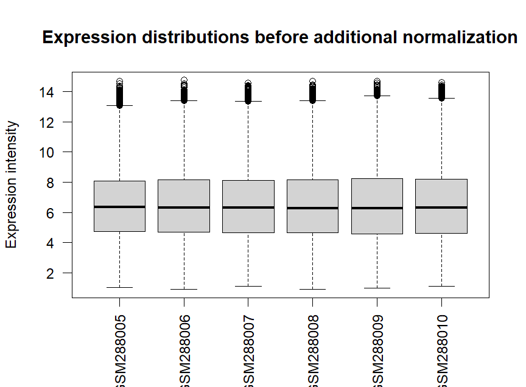
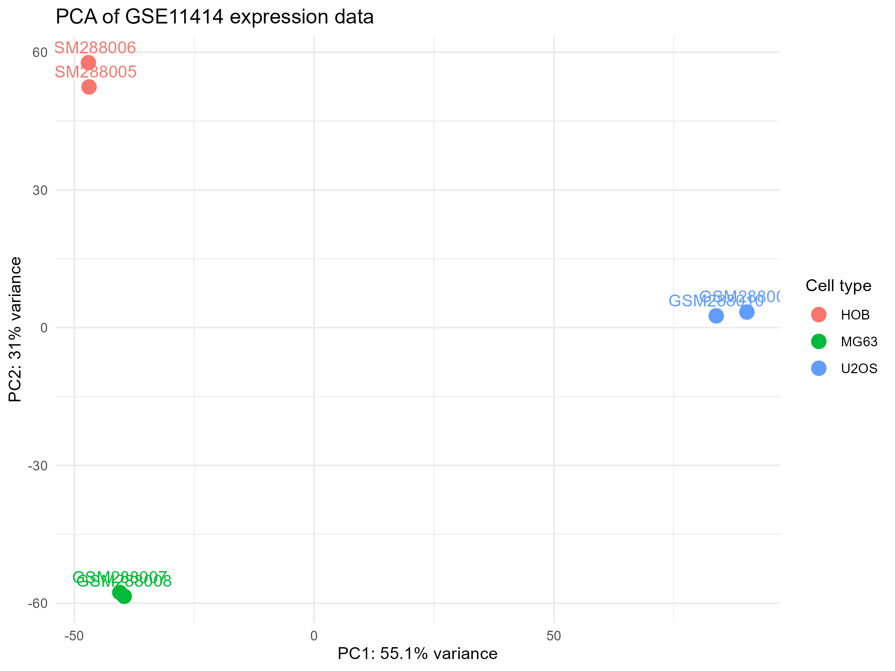
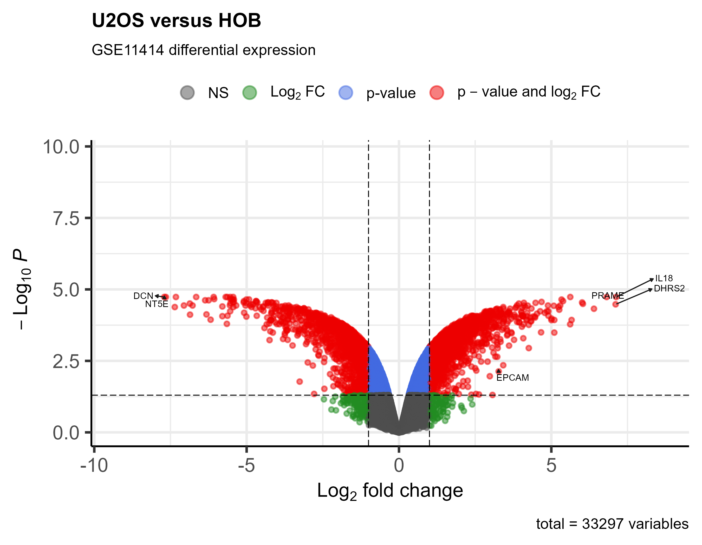
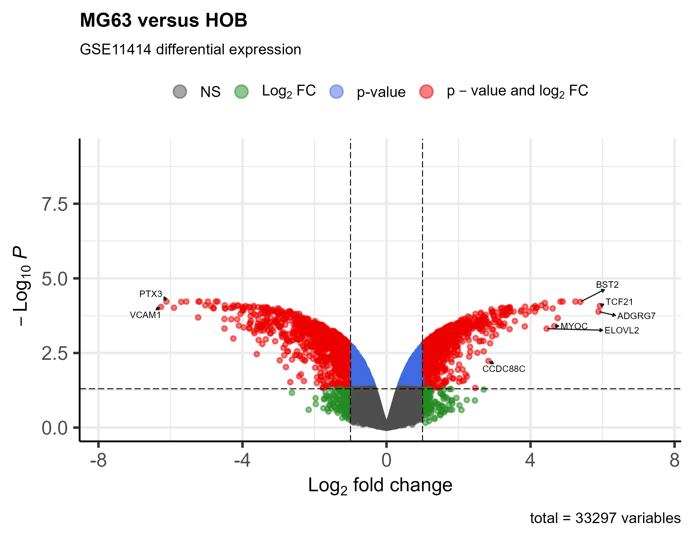
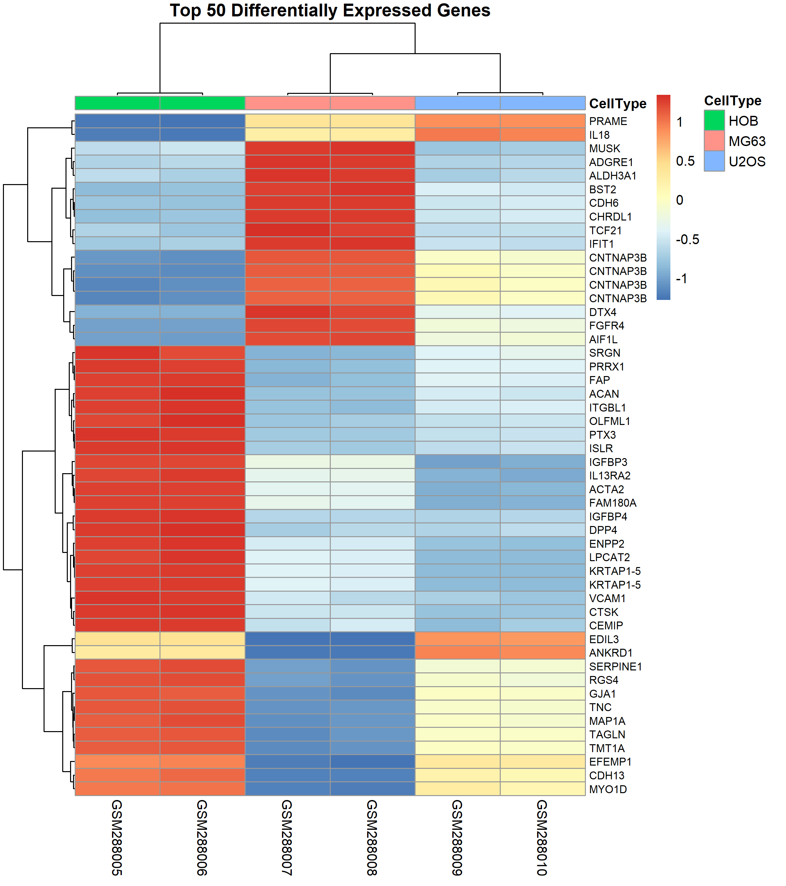

library(limma)
library(GEOquery)
library(ggplot2)
library(pheatmap)
library(EnhancedVolcano)
library(AnnotationDbi)
library(hugene10sttranscriptcluster.db)Final Report: Differential Gene Analysis of Osteosarcoma
Introduction
Osteosarcoma is the most common primary bone tumor malignancy and demonstrates a high risk of metastasis and recurrence after therapy. It presents itself in a bimodal distribution as it is commonly observed in individuals under 25 years of age or individuals over 65 years of age. Its occurrence in young adults is mainly due to the rapid bone growth of adolescence which predisposes the individual to cancerous development. In the elderly, osteosarcoma more commonly manifests itself as a secondary malignancy to Paget disease or irradiation.
Osteosarcoma subtypes are characterized by degree of differentiation, histology, and location within the bone. The most common subtype of osteosarcoma is the intramedullary osteosarcoma which is both complex and aggressive. The most common symptom is bone pain, initially, as it is caused by activity, but as disease progresses, pain persists throughout rest. Treatment includes excision of tumor, chemotherapy, and radiation therapy. Despite the availability of treatments, patient survival rates remain low.
The etiology of osteosarcoma is currently under investigation and believed to be the result of genetic predisposition. Some of the primary mutations include: germline mutations in the RB1 gene which cause hereditary retinoblastoma, germline mutations in the TP53 tumor suppressor gene which cause Li-Fraumeni syndrome, and autosomal recessive mutations of the RECQL4 gene which cause Rothmund-Thompson syndrome. Development of any of these syndromes leads to increased risk of osteosarcoma. Although some genetic mutations have been characterized, the identification of changes in gene expression that lead to osteosarcoma would provide potential insight as to novel therapeutic strategies. Hence, this study aimed to perform a genome wide comparison of gene expression to identify genes that are differentially expressed in osteosarcoma cell lines (U2OS and MG63) as compared to normal human osteoblasts (HOB). The goal of this analysis is to visualize the data generated by this study using code generated in R.
Methods
This study characterized the gene expression profile of osteosarcoma cell lines U2OS and MG63 as well as normal human osteoblasts (HOB). A combination of technologies were used to generate epigenomic, genomic, and gene expression profiles. For this R analysis, however, a txt file was obtained from this study’s Affymetrix Gene 1.0 platform microarray experiment. Gene expression profiling by microarray consists of a glass slide or silicon chip that contains thousands of DNA probes. These DNA probes are designed to be complimentary to mRNA or cDNA gene sequences of a sample of choice. The mRNA or cDNA of the sample will hybridize to the oligonucleotide probes. As these samples hybridize to their complementary sequence, they will cause the probe to release a signal. The more signal generated by the probe, the higher the abundance of that particular transcript. In this manner, signal intensity can dictate a quantitative measure of gene expression.

Data Analysis
Step 1: Load packages
Load the R packages needed to analyze the expression data and create the figures shown in this report.
Step 2: Import the GEO expression matrix
file_path <- "Data/GSE11414_series_matrix.txt.gz"
# Read the complete compressed GEO series-matrix file
lines <- readLines(file_path)
# Locate the expression table boundaries
table_start <- grep("!series_matrix_table_begin", lines) + 1
table_end <- grep("!series_matrix_table_end", lines) - 1
# Import only the expression table
expression_data <- read.delim(
text = lines[table_start:table_end],
header = TRUE,
sep = "\t",
quote = "\"",
check.names = FALSE,
stringsAsFactors = FALSE
)
# Display the dimensions of the imported table
dim(expression_data)
(head(expression_data))ID_REF GSM288005 GSM288006 GSM288007 GSM288008 GSM288009 GSM288010
7892501 6.16853 5.43825 7.34280 7.28333 6.86265 5.55112
7892502 4.47048 4.50073 4.97202 5.27214 5.49168 6.15660
7892503 3.60062 4.47687 4.00139 4.99575 2.67940 3.31075
7892504 10.59850 10.37850 10.02410 10.12660 10.09570 10.30910
7892505 3.33995 3.48976 2.65829 3.62730 4.82059 4.19196
7892506 4.08223 4.47190 3.39704 5.19347 4.98825 5.22563Step 3: Prepare the expression matrix and sample metadata
# Use probe IDs as row names
rownames(expression_data) <- expression_data$ID_REF
# Remove the probe-ID column and create a numeric matrix
expression_matrix <- as.matrix(expression_data[, -1])
storage.mode(expression_matrix) <- "numeric"
# Preview part of the matrix
expression_matrix[1:5, 1:3]
# Describe the six samples
sample_metadata <- data.frame(
sample = colnames(expression_matrix),
cell_type = factor(
c("HOB", "HOB", "MG63", "MG63", "U2OS", "U2OS"),
levels = c("HOB", "MG63", "U2OS")
),
replicate = c(1, 2, 1, 2, 1, 2)
)
sample_metadata GSM288005 GSM288006 GSM288007
7892501 6.16853 5.43825 7.34280
7892502 4.47048 4.50073 4.97202
7892503 3.60062 4.47687 4.00139
7892504 10.59850 10.37850 10.02410
7892505 3.33995 3.48976 2.65829Step 4: Quality Assessment
boxplot(
expression_matrix,
las = 2,
main = "Expression distributions across samples",
ylab = "Expression intensity"
)
Step 5: Principal Component Analysis
pca_plot <- ggplot(
pca_data,
aes(
x = PC1,
y = PC2,
color = cell_type,
label = sample
)
) +
geom_point(size = 4) +
geom_text(vjust = -0.8, show.legend = FALSE) +
labs(
title = "PCA of GSE11414 expression data",
x = paste0("PC1: ", percent_variance[1], "% variance"),
y = paste0("PC2: ", percent_variance[2], "% variance"),
color = "Cell type"
) +
theme_minimal()
pca_plot
### Step 6: Differential expression analysis with limma# Confirm that metadata and expression columns use the same sample order
stopifnot(
identical(
colnames(expression_matrix),
as.character(sample_metadata$sample)
)
)
# Create a design matrix with one column per cell type
design <- model.matrix(
~0 + cell_type,
data = sample_metadata
)
colnames(design) <- levels(sample_metadata$cell_type)
# Fit a linear model independently to each probe
fit <- lmFit(expression_matrix, design)
# Define the comparisons of interest
contrast_matrix <- makeContrasts(
MG63_vs_HOB = MG63 - HOB,
U2OS_vs_HOB = U2OS - HOB,
MG63_vs_U2OS = MG63 - U2OS,
levels = design
)
# Apply the contrasts and empirical Bayes moderation
fit2 <- contrasts.fit(fit, contrast_matrix)
fit2 <- eBayes(fit2)Step 7: Annotate probes with gene information
# Annotate MG63-versus-HOB results
results_MG63$SYMBOL <- mapIds(
hugene10sttranscriptcluster.db,
keys = results_MG63$Probe_ID,
column = "SYMBOL",
keytype = "PROBEID",
multiVals = "first"
)
results_MG63$GENENAME <- mapIds(
hugene10sttranscriptcluster.db,
keys = results_MG63$Probe_ID,
column = "GENENAME",
keytype = "PROBEID",
multiVals = "first"
)
results_MG63$ENTREZID <- mapIds(
hugene10sttranscriptcluster.db,
keys = results_MG63$Probe_ID,
column = "ENTREZID",
keytype = "PROBEID",
multiVals = "first"
)
# Annotate U2OS-versus-HOB results
results_U2OS$SYMBOL <- mapIds(
hugene10sttranscriptcluster.db,
keys = results_U2OS$Probe_ID,
column = "SYMBOL",
keytype = "PROBEID",
multiVals = "first"
)
results_U2OS$GENENAME <- mapIds(
hugene10sttranscriptcluster.db,
keys = results_U2OS$Probe_ID,
column = "GENENAME",
keytype = "PROBEID",
multiVals = "first"
)
results_U2OS$ENTREZID <- mapIds(
hugene10sttranscriptcluster.db,
keys = results_U2OS$Probe_ID,
column = "ENTREZID",
keytype = "PROBEID",
multiVals = "first"
)
annotated_MG63 <- results_MG63
annotated_U2OS <- results_U2OS
# Recreate significant tables after annotation
sig_annotated_MG63 <- subset(
annotated_MG63,
adj.P.Val < 0.05 & abs(logFC) >= 1
)
sig_annotated_U2OS <- subset(
annotated_U2OS,
adj.P.Val < 0.05 & abs(logFC) >= 1
)
# Add expression direction
sig_annotated_MG63$Direction <- ifelse(
sig_annotated_MG63$logFC > 0,
"Upregulated",
"Downregulated"
)
sig_annotated_U2OS$Direction <- ifelse(
sig_annotated_U2OS$logFC > 0,
"Upregulated",
"Downregulated"
)Step 8: Volcano plots
annotated_MG63$Plot_Label <- ifelse(
is.na(annotated_MG63$SYMBOL),
"",
annotated_MG63$SYMBOL
)
annotated_U2OS$Plot_Label <- ifelse(
is.na(annotated_U2OS$SYMBOL),
"",
annotated_U2OS$SYMBOL
)volcano_MG63 <- EnhancedVolcano(
annotated_MG63,
lab = annotated_MG63$Plot_Label,
x = "logFC",
y = "adj.P.Val",
title = "MG63 versus HOB",
subtitle = "GSE11414 differential expression",
xlab = expression(Log[2] ~ "fold change"),
pCutoff = 0.05,
FCcutoff = 1,
pointSize = 1.5,
labSize = 3,
drawConnectors = TRUE,
max.overlaps = 15
)
volcano_MG63volcano_U2OS <- EnhancedVolcano(
annotated_U2OS,
lab = annotated_U2OS$Plot_Label,
x = "logFC",
y = "adj.P.Val",
title = "U2OS versus HOB",
subtitle = "GSE11414 differential expression",
xlab = expression(Log[2] ~ "fold change"),
pCutoff = 0.05,
FCcutoff = 1,
pointSize = 1.5,
labSize = 3,
drawConnectors = TRUE,
max.overlaps = 15
)
volcano_U2OS

Step 9: Heatmap of top 50 differentially expressed genes
# Keep annotated probes and order by adjusted p-value
heatmap_candidates <- annotated_MG63[
!is.na(annotated_MG63$SYMBOL) &
annotated_MG63$SYMBOL != "",
]
heatmap_candidates <- heatmap_candidates[
order(heatmap_candidates$adj.P.Val),
]
# Keep one probe per gene symbol and select the top 50 genes
heatmap_candidates <- heatmap_candidates[
!duplicated(heatmap_candidates$SYMBOL),
]
top50 <- head(heatmap_candidates, 50)
# Extract expression values for the selected probes
heatmap_data <- expression_matrix[
top50$Probe_ID,
,
drop = FALSE
]
# Replace probe IDs with gene symbols
rownames(heatmap_data) <- top50$SYMBOL
# Standardize each gene across samples
heatmap_scaled <- t(scale(t(heatmap_data)))
# Create a column annotation for sample type
annotation_col <- data.frame(
CellType = sample_metadata$cell_type
)
rownames(annotation_col) <- colnames(heatmap_scaled)pheatmap(
heatmap_scaled,
annotation_col = annotation_col,
show_rownames = TRUE,
show_colnames = TRUE,
cluster_rows = TRUE,
cluster_cols = TRUE,
fontsize_row = 8,
main = "Top 50 Differentially Expressed Genes"
)
Conclusions
This dataset reveals the most differentially expressed genes in osteosarcoma cell lines U2OS and MG63 as compared to normal human osteoblasts (HOB). Future directions for this experiment would include pathway analysis in which not only changes in gene expression, but alterations in biological pathways are also studied. This would reveal which pathways osteosarcoma becomes more dependent on in a cell line model.
References
- Staudt L, Brown P. 2000. Genomic Views of the Immune System. Annual Review of Immunology. 18:829–859. https://doi.org/10.1146/annurev.immunol.18.1.829
- GEO Accession viewer. [accessed 2026 July 31]. https://www.ncbi.nlm.nih.gov/geo/query/acc.cgi?acc=GSE11414
- Sadikovic B et al. 2008. In Vitro Analysis of Integrated Global High-Resolution DNA Methylation Profiling with Genomic Imbalance and Gene Expression in Osteosarcoma. PLOS ONE. 3(7):e2834. https://doi.org/10.1371/journal.pone.0002834
- Cersosimo F et al. 2020. Tumor-Associated Macrophages in Osteosarcoma: From Mechanisms to Therapy. Int J Mol Sci. 21(15):5207. https://doi.org/10.3390/ijms21155207
Last updated: July 2026